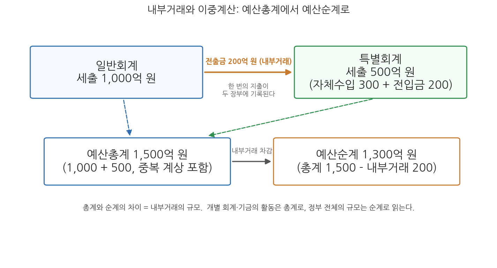
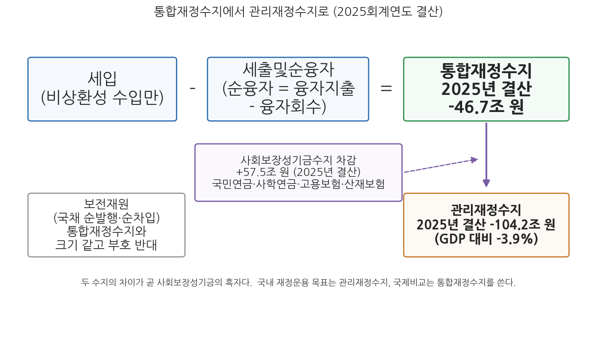
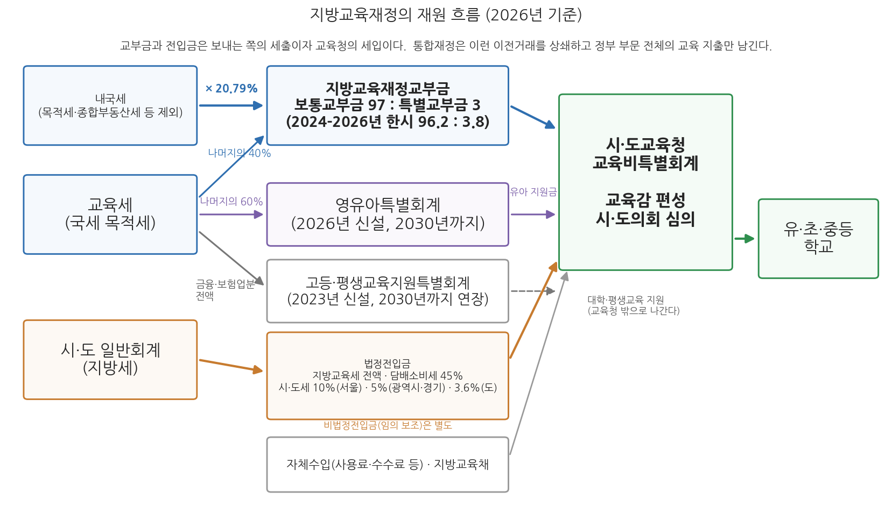

4주차 1차시. 예산의 총계·순계와 통합재정
최종 수정: 2026-09-22 · 이 교재는 학기 중에도 계속 업데이트됩니다
정부는 예산, 기금, 결산, 국채, 차입금, 국유재산의 현재액 및 통합재정수지 그 밖에 ... 재정에 관한 중요한 사항을 매년 1회 이상 정보통신매체·인쇄물 등 적당한 방법으로 알기 쉽고 투명하게 공표하여야 한다. (국가재정법 제9조 제1항에서 발췌)
이 장에서 배우는 것
2026년 4월 6일, 재정경제부는 2025회계연도 국가결산보고서가 국무회의에서 심의·의결되었다고 발표했다. 2026년 1월 정부조직 개편으로 결산 사무를 넘겨받은 재정경제부의 첫 국가결산 발표였다. 그런데 이날 결산을 전한 보도의 숫자는 하나가 아니었다. 어떤 기사는 지난해 나라살림 적자가 46.7조 원이라 썼고, 다른 기사는 104.2조 원이라 썼다. 같은 정부가 같은 날 발표한 같은 해의 결산인데, 적자 규모가 두 배 넘게 벌어진다. 어느 쪽이 맞는가. 답은 "둘 다 맞다"이다. 46.7조 원은 통합재정수지 적자이고, 104.2조 원은 통합재정수지에서 사회보장성기금의 흑자를 걷어낸 관리재정수지 적자다. 나라살림의 성적표는 하나의 숫자가 아니라, 무엇을 더하고 무엇을 빼는가에 따라 달라지는 여러 개의 숫자로 발표된다.
이 장은 그 "더하고 빼는 규칙"을 배우는 시간이다. 3주차에서 우리는 한국의 정부재정이 일반회계 1개, 여러 개의 특별회계, 수십 개의 기금이라는 칸막이 구조로 짜여 있음을 보았다. 칸막이는 재정 운영의 자율성과 전문성을 위한 장치지만, 그 대가로 "그래서 정부는 한 해에 돈을 얼마나 쓰는가"라는 단순한 질문에 답하기 어렵게 만든다. 칸막이 사이로 돈이 오가기 때문에 단순 합산은 실제보다 부풀려진 숫자를 낳고, 국채를 찍어 마련한 돈까지 수입으로 세면 살림의 건전성이 가려진다. 예산의 총계와 순계, 그리고 통합재정은 이 문제를 풀기 위해 고안된 합산의 렌즈다. 구체적으로 다음을 배운다.
- 내부거래가 만드는 이중계산 문제와 예산총계·예산순계의 구분, 그리고 총계·순계(합산 방식)와 유량·저량(시간)이라는 두 축의 관계
- 통합재정의 의의, 포괄범위, 그리고 IMF 재정통계 기준과의 관계
- 세입, 세출및순융자, 보전재원의 구분과 통합재정수지의 산출 논리
- 관리재정수지의 개념과 사회보장성기금수지를 제외하는 이유
- 2025회계연도 결산 수치로 두 재정수지를 읽는 법
- 통합재정의 세 번째 조각인 지방교육재정의 재원 구조(교부금·전입금·자체수입), 내국세 연동 방식이 낳는 문제점, 그리고 2026년 개편 논쟁을 포함한 해결방안의 지형
이 장은 하나의 질문을 따라 전개된다. "쪼개진 나라살림을 어떻게 하나의 숫자로 합산하고, 그 숫자에서 재정의 건전성을 어떻게 읽는가?"
1.1 내부거래와 이중계산 문제에서 출발해 예산총계와 예산순계를 구분한다 → 1.2 회계와 기금을 하나로 합치는 통합재정의 의의와 포괄범위를 본다 → 1.3 세입 · 세출및순융자 · 보전재원의 구분으로 통합재정수지를 산출하고 해석한다 → 1.4 통합재정수지에서 사회보장성기금수지를 뺀 관리재정수지의 논리와 쟁점을 다룬다 → 1.5 통합재정에 포함되는 지방교육재정의 재원 구조를 읽고, 내국세 연동 방식의 문제점과 해결방안 논의를 살핀다.
1.1 예산총계와 예산순계
칸막이 사이로 돈이 오간다: 내부거래
정부의 회계와 기금은 서로 고립된 섬이 아니다. 일반회계와 특별회계 사이, 특별회계와 특별회계 사이, 회계 안의 계정 사이, 그리고 회계와 기금 사이, 기금과 기금 사이에는 끊임없이 자금이 오간다. 일반회계가 특정 특별회계의 사업 재원을 지원하려고 돈을 옮기면 보내는 쪽에서는 전출금, 받는 쪽에서는 전입금이 되고, 한 회계나 기금이 여유자금을 다른 회계·기금에 맡기면 맡기는 쪽에서는 예탁금, 받는 쪽에서는 예수금이 된다. 이 밖에 출연금 등 다양한 형태의 자금 이전이 있다. 이처럼 정부라는 하나의 살림 안에서 주머니와 주머니 사이를 오가는 거래를 내부거래(internal transaction)라 한다.
문제는 이 내부거래가 양쪽 장부에 모두 기록된다는 점이다. 일반회계가 어느 특별회계에 200억 원을 전출하면, 이 200억 원은 일반회계의 세출로 한 번, 특별회계의 세입과 그 재원으로 집행되는 세출로 또 한 번 잡힌다. 정부 전체로 보면 실제로 나간 돈은 한 번인데 장부 위에서는 두 번 세어지는 것이다. 회계와 기금의 수가 많고 칸막이 사이의 거래가 활발할수록 이 이중계산의 규모는 커진다.
예산총계(gross budget)는 일반회계, 특별회계 등 각 회계의 규모를 이중계산을 제거하지 않고 그대로 합산한 예산 규모다. 예산순계(net budget)는 예산총계에서 회계 간, 회계 내 계정 간, 회계와 기금 간 내부거래로 중복 계상된 부분을 차감한 규모다. 정부 재정의 전체 규모를 파악하는 데는 순계 기준이 유용하고, 개별 회계나 기금의 독립된 활동 규모를 파악하는 데는 총계 기준이 유용하다.
숫자로 확인해 보자. 일반회계의 세출이 1,000억 원이고 그중 200억 원이 특별회계로의 전출금이며, 특별회계의 세출이 500억 원(재원은 자체수입 300억 원과 일반회계 전입금 200억 원)인 단순한 정부를 생각하자. 두 회계의 세출을 그대로 더한 총계는 1,500억 원이다. 그러나 특별회계가 쓴 500억 원 가운데 200억 원은 일반회계 세출에서 이미 한 번 세어진 돈이므로, 정부가 실제로 바깥에 지출한 돈은 1,500억 원에서 중복분 200억 원을 뺀 1,300억 원이다. 이것이 순계다. 그림 4-1이 이 관계를 보여 준다.

그림 4-1을 읽는 법은 이렇다. 위의 두 상자는 일반회계와 특별회계의 세출 장부이고, 두 상자를 잇는 화살표가 내부거래(전출금 200억 원)다. 아래의 두 상자는 이 장부를 합산하는 두 가지 방식, 곧 총계와 순계다. 이 그림에서 알 수 있는 것은 총계와 순계의 차이가 정확히 내부거래의 규모와 같다는 점이다. 어느 기준이 옳은가의 문제가 아니라 용도가 다른 것이다. 특별회계 하나의 사업 활동이 얼마나 되는지 보려면 총계가 맞고, 정부 전체의 살림 규모를 보려면 순계가 맞다.
지방재정에서는 이 구분이 한층 더 중요하다. 지방자치단체 안의 회계 간 이전거래에 더해, 광역자치단체와 기초자치단체 사이에 보조금, 교부금, 융자금 같은 이전거래가 대규모로 존재하기 때문이다. 서울특별시가 자치구에 내려보낸 교부금은 서울특별시의 세출이자 자치구의 세입·세출로 다시 잡히므로, 지방재정 전체의 규모는 이런 단체 간 이전거래까지 제외한 순계 기준으로 계산한다. 중앙정부가 지방자치단체에 내려보내는 지방교부세와 국고보조금도 마찬가지 논리로, 국가재정과 지방재정을 합산할 때는 반드시 제거되어야 할 이전거래다.
예산총계주의와 예산총계: 닮은 말, 다른 층위
여기서 용어 하나를 짚고 가야 한다. 2주차 2차시에서 본 예산원칙 중에 완전성의 원칙, 곧 예산총계주의가 있었다. 국가재정법은 이를 명문으로 선언한다.
"① 한 회계연도의 모든 수입을 세입으로 하고, 모든 지출을 세출로 한다.
② 제53조에 규정된 사항을 제외하고는 세입과 세출은 모두 예산에 계상하여야 한다."
무슨 뜻인가. 정부의 모든 수입과 지출은 서로 상계하거나 누락하지 말고 전액 그대로 예산서에 담아야 한다는 원칙이다. 세금을 걷는 데 든 비용을 빼고 남은 순수입만 계상하는 식의 처리를 허용하면 국회와 국민이 재정의 전모를 볼 수 없게 되기 때문에, 예산서 자체는 총액 기준으로 작성하도록 법이 강제하는 것이다. 이 원칙 덕분에 개별 회계·기금의 장부는 빠짐없이 기록되지만, 바로 그 때문에 장부들을 단순 합산하면 내부거래가 이중으로 세어지는 문제가 생긴다. 순계는 이 원칙을 훼손하는 것이 아니라, 총계로 작성된 장부를 분석 목적에 맞게 통계적으로 재가공한 값이다.
예산총계주의(완전성의 원칙)는 수입과 지출을 상계하지 말고 전액 계상하라는 예산 편성의 규범이고, 예산총계는 회계·기금의 규모를 중복 제거 없이 단순 합산한 통계 개념이다. 앞의 것은 "예산서를 어떻게 쓸 것인가"의 문제이고, 뒤의 것은 "재정 규모를 어떻게 셀 것인가"의 문제다. 시험에서도 실무에서도 자주 혼동되는 용어이므로 층위를 구분해 기억해 두자.
총계·순계와 유량·저량: 두 개의 축
총계·순계와 유량·저량은 서로 다른 축의 구분이다. 총계·순계는 내부거래를 중복 계산할 것인가 걷어낼 것인가라는 합산 방식의 축이고, 유량(flow)·저량(stock)은 일정 기간의 흐름인가 특정 시점의 잔고인가라는 시간의 축이다. 예산·세입·세출·재정수지는 한 회계연도의 유량이고, 국가채무·국유재산·기금 적립금은 회계연도 말의 저량이다.
두 축은 교차한다. 유량에 총계와 순계가 있듯이 저량에도 총계와 순계가 있다. 국가채무는 현금주의 기준을 적용하며 내부거래를 제외하는 통합 계산 방식으로 산출하므로, 어느 기금이 보유한 국채는 정부가 정부에 진 빚이어서 국가채무에서 빠진다.
| 예시 (단위: 억 원) | 총계 (내부거래 포함) | 순계 (내부거래 제외) |
|---|---|---|
| 유량: 한 회계연도의 흐름 | 예산총계 1,500 | 예산순계 1,300 |
| 저량: 회계연도 말의 잔고 | 국채 발행잔액 1,040 | 국가채무 940 |
두 가지를 조심해야 한다. 한 해 예산 규모와 쌓인 빚은 시간의 축이 다른 숫자여서 크기를 곧바로 견주는 것은 뜻이 없다. 국가채무를 GDP로 나눈 비율도 저량을 한 해의 유량으로 나눈 값이므로, 빚이 한 해 국민소득의 어느 정도인가를 가늠하는 지표로 읽어야 한다.
이 구분을 익혀 두면 앞으로 만날 재정 지표를 제자리에 놓을 수 있다. 1.2절과 1.3절에서 보는 통합재정과 통합재정수지는 한 회계연도의 유량을 순계로 재는 지표이고, 다음 차시에서 보는 국가채무(D1)는 회계연도 말의 저량을 순계로 재는 지표다. 두 지표를 잇는 다리가 해마다의 재정수지 적자가 쌓이는 과정이라는 점도 함께 기억해 두자.
1.2 통합재정의 의의와 포괄범위
조각을 하나로 합치는 렌즈
순계 개념으로 이중계산을 제거했다면, 다음 과제는 합산의 범위다. 3주차에서 본 것처럼 정부의 재정활동은 예산(일반회계·특별회계)만이 아니라 기금을 통해서도 이루어진다. 예산만 보고 기금을 빼놓으면 국민연금기금이나 주택도시기금이 수행하는 대규모 재정활동이 시야에서 사라진다. 통합재정(consolidated fiscal accounts)은 일반회계, 특별회계, 기금을 모두 포함하는 정부의 재정활동을 체계적으로 분류해 하나의 표로 보여 줌으로써, 재정이 국민경제에 미치는 효과를 파악하고자 하는 재정통계의 틀이다. 3주차가 나라살림의 조각들을 하나씩 뜯어본 시간이었다면, 통합재정은 그 조각들을 다시 하나로 합쳐 전체를 보는 렌즈다.
통합재정은 일반회계, 특별회계, 기금과 세입세출 외 자금을 포괄하여 정부의 재정활동을 순계 기준으로 파악하는 재정통계 체계다. 회계·기금 간 내부거래와 국채 발행·상환 같은 보전거래를 제외하여 재정활동의 실질 규모를 보여 주고, 세입과 세출을 경상거래와 자본거래로 나누는 경제적 분류를 사용하며, 그 수지(통합재정수지)로 재정 건전성을 판단한다. 한국은 IMF(국제통화기금)의 권고에 따라 1979년부터 정부재정통계편람(GFS) 기준의 통합재정수지를 작성해 왔다.
통합재정의 포괄범위는 넓다. 중앙정부 차원에서는 일반회계와 특별회계, 기금에 더해 세입세출 외 자금까지 포함한다. 세입세출 외 자금이란 세계잉여금(한 해 살림을 결산하고 남은 돈)이나 전대차관(정부가 외국에서 빌려 국내 실수요자에게 다시 빌려주는 차관)처럼 세입세출예산 바깥에서 관리되는 자금을 말한다. 나아가 통합재정의 규모는 중앙재정만이 아니라 지방재정과 지방교육재정까지 포함해 정부 부문 전체를 아우른다. 다만 기금 가운데 보증이나 보험 같은 금융활동을 수행하는 금융성기금은 재정활동이 아닌 금융활동으로 보아 통합재정의 범위에서 제외한다. 요컨대 통합재정은 "정부라는 하나의 경제주체가 국민경제에서 얼마를 걷고 얼마를 쓰는가"를 최대한 실질에 가깝게 재려는 통계다.
통합재정이 국제 기준의 산물이라는 점도 기억할 필요가 있다. 통합재정의 분류 체계는 IMF가 정한 정부재정통계편람(Government Finance Statistics Manual, GFSM)을 따른다. 한국은 1979년부터 통합재정수지를 작성해 왔으며, 현재의 현금주의 통합재정수지 산출은 GFSM 1986 체계에 기초한다. 한편 IMF는 2001년과 2014년의 개정판에서 발생주의와 제도단위 기준으로 틀을 바꾸었다. 오늘날 재정당국은 현금주의 기반의 통합재정수지와 함께 국제 기준에 따른 일반정부·공공부문 재정통계도 작성하는데, 이 확장된 범위의 이야기는 다음 차시(4주차 2차시)에서 다룬다. 통합재정이 경상거래와 자본거래를 구분하고 정부소비·정부투자 같은 국민소득계정의 항목과 연계되도록 설계된 것도, 재정통계를 거시경제 분석의 재료로 쓰기 위해서다.
이 장 첫머리에 인용한 국가재정법 제9조는 통합재정수지를 정부가 매년 국민에게 공표해야 할 재정정보의 하나로 명시하고 있다. 재정의 전체 모습을 알기 쉽고 투명하게 알리는 것이 법적 의무라는 뜻이며, 오늘날 이 의무는 재정정보 공개 시스템인 열린재정(openfiscaldata.go.kr)의 통계 공개로 구현되고 있다.
1.3 통합재정수지의 산출과 해석
세입, 세출및순융자, 보전재원: 세 개의 서랍
통합재정의 핵심 기술은 정부의 모든 거래를 성격에 따라 세입, 세출및순융자, 보전재원이라는 세 개의 서랍에 나누어 담는 것이다. 이 분류의 기준은 "갚아야 하는 돈인가"이다.
먼저 세입에는 정부로 유입되는 수입 가운데 비상환성 수입만 기록한다. 조세수입과 수수료 같은 세외수입이 경상수입으로, 정부 보유 자산의 매각 수입이 자본수입으로 여기에 담긴다. 반면 국채 발행이나 차입으로 들어온 돈은 언젠가 갚아야 하는 상환성 수입이므로 세입이 아니라 보전재원 수입으로 분류한다. 정부 장부에 들어온 돈이라고 모두 벌이가 아니라는 것, 이것이 통합재정의 첫 번째 규율이다.
다음으로 세출및순융자에는 정부의 모든 비상환성 지출과 함께 순융자를 담는다. 순융자란 정부가 정책 목적으로 빌려준 돈(융자지출)에서 회수한 돈(융자회수)을 뺀 차액이다. 융자는 형식상 되돌려받는 거래지만 유동성 운용이 아니라 정책 수단이므로, 순액 기준으로 지출 쪽에 계상한다. 마지막으로 보전재원은 세입과 세출및순융자의 차이를 메우는 재원, 곧 국채 발행과 차입(에서 상환을 뺀 순액)이다. 재정이 적자면 보전재원이 플러스(빚으로 메움)가 되고, 흑자면 마이너스(빚을 갚음)가 된다.
가계에 비유하면 분명해진다. 한 달 생활비가 모자라 마이너스통장에서 100만 원을 꺼내 썼다고 하자. 통장에 들어온 100만 원을 "이달의 소득"으로 계산하면 가계부는 균형처럼 보이지만, 실제로는 다음 달의 소득을 미리 당겨 쓴 것이다. 국채 발행도 같다. 발행 수입을 세입으로 세면 재정적자가 장부에서 사라지고, 재정이 얼마나 빚에 기대고 있는지 보이지 않게 된다. 통합재정이 상환성 수입을 세입에서 떼어내 보전재원이라는 별도 서랍에 담는 것은, 적자를 감추지 못하게 만드는 장치다. 거꾸로 말하면 보전재원의 크기 자체가 재정적자의 크기다.
수지의 산출: 하나의 예제
이 세 서랍의 분류가 재정수지를 어떻게 바꾸는지, 단순화한 예제로 확인하자. 어느 해 정부의 장부가 조세수입 100, 세외수입 20, 융자회수 30, 국채발행 50의 수입과 일반행정비 80, 고정자산 취득 60, 융자지출 50, 국채상환 10의 지출로 이루어져 있다고 하자(단위는 조 원이라 생각해도 좋다). 전통적인 세입·세출 장부에서는 수입 합계도 200, 지출 합계도 200으로 재정은 정확히 균형처럼 보인다. 그러나 통합재정으로 재분류하면 그림이 달라진다. 표 4-1이 그 변환이다.
표 4-1. 정부재정회계를 통합재정으로 바꾸면 (예시)
| 구분 | 전통적 세입·세출 장부 (총계) | 통합재정 기준 |
|---|---|---|
| 수입 쪽 | 조세수입 100 + 세외수입 20 + 융자회수 30 + 국채발행 50 = 200 | 세입 = 조세수입 100 + 세외수입 20 = 120 |
| 지출 쪽 | 일반행정비 80 + 고정자산 60 + 융자지출 50 + 국채상환 10 = 200 | 세출및순융자 = 80 + 60 + 순융자(50 - 30) = 160 |
| 재정수지 | 200 - 200 = 0 (균형처럼 보임) | 120 - 160 = -40 (적자) |
| 보전재원 | 별도로 드러나지 않음 | 국채 순발행(50 - 10) = +40 |
전통 장부의 균형은 착시였다. 국채를 찍어 들어온 50을 수입으로 세고 갚은 10을 지출로 세었기 때문에 장부가 맞아떨어졌을 뿐, 갚지 않아도 되는 돈으로 벌어들인 세입 120에 비해 정부가 실제로 쓴 세출및순융자는 160이어서 이 해의 재정은 40의 적자다. 그리고 그 적자 40은 정확히 국채 순발행 40으로 메워졌다. 여기서 통합재정수지의 산식이 나온다.
통합재정수지 = 세입 - (세출 + 순융자) = (세입 + 융자회수) - (세출 + 융자지출) = -(보전재원)
통합재정수지와 보전재원은 크기가 같고 부호만 반대다. 적자만큼 빚을 내고, 흑자만큼 빚을 갚기 때문이다. 통합재정수지가 재정활동의 건전성을 보여 주는 지표가 되는 이유가 여기에 있다. 오늘날 재정당국이 발표하는 통합재정수지는 실무적으로 총수입에서 총지출을 뺀 값으로 산출되는데, 총수입·총지출이라는 지표 자체는 다음 차시의 주제이므로 여기서는 위의 산식과 같은 논리라는 점만 확인해 두자.
해석: 2025회계연도의 통합재정수지
산식을 실제 수치에 적용해 보자. 2026년 4월 발표된 2025회계연도 결산에서 통합재정수지는 46.7조 원 적자였다. 계획(추가경정예산 기준 60.9조 원 적자)보다 14.2조 원 개선된 결과인데, 이는 세입이 예상보다 더 걷혔거나 지출이 계획에 못 미쳤다는 뜻이다. 통합재정수지 적자는 그 해 정부가 국민경제에서 걷은 것보다 더 많이 풀었다는 것, 그리고 그 차액만큼 국채 발행 등 보전재원에 기댔다는 것을 의미한다. 적자가 항상 나쁜 것은 아니다. 경기가 침체할 때 정부가 일부러 적자를 내어 수요를 떠받치는 것은 2주차에서 본 재정의 경제안정화 기능의 정상적인 작동이다. 문제는 적자의 크기와 지속성, 그리고 그것이 쌓여 만드는 국가채무인데, 이 이야기는 다음 차시에서 이어진다.
1.4 관리재정수지
통합재정수지의 착시: 연금 흑자
그런데 한국의 통합재정수지에는 고유한 착시 요인이 하나 있다. 국민연금을 비롯한 사회보장성기금이다. 국민연금기금은 아직 보험료를 내는 사람이 연금을 받는 사람보다 많은 제도 성숙 이전 단계에 있어, 해마다 수십조 원의 흑자를 낸다. 이 흑자는 통합재정의 세입·세출에 그대로 합산되므로 통합재정수지를 큰 폭으로 끌어올린다. 그러나 이 돈은 미래의 연금 지급을 위해 쌓아 두는 적립금이지, 정부가 지금 도로를 놓거나 복지사업에 쓸 수 있는 재정 여력이 아니다. 통합재정수지만 보면 나라살림이 실제보다 건전해 보이는 착시가 생기는 것이다.
이 착시를 걷어내기 위해 만든 지표가 관리재정수지다. 처음에는 관리대상수지라는 이름으로 쓰이다가 2012년부터 지금의 이름으로 바뀌었다.
관리재정수지는 통합재정수지에서 사회보장성기금수지를 제외한 재정수지다. 사회보장성기금은 국민연금기금, 사립학교교직원연금기금, 고용보험기금, 산업재해보상보험및예방기금의 4개를 말한다. 연금·보험의 구조적 흑자를 걷어내어 정부의 실질적인 재정 상태를 보여 주려는 취지의 지표로, 국제 기준에는 없는 한국 고유의 보조지표다. 정부의 재정운용 목표는 통상 이 관리재정수지를 기준으로 설정된다.

그림 4-2를 읽는 법은 이렇다. 왼쪽 위 흐름은 1.3절의 산식, 곧 세입에서 세출및순융자를 빼 통합재정수지를 얻는 과정이고, 오른쪽 아래 흐름은 거기서 사회보장성기금수지를 한 번 더 빼 관리재정수지를 얻는 과정이다. 상자 안의 수치는 2025회계연도 결산 실적이다. 이 그림에서 알 수 있는 것은 두 가지다. 첫째, 두 수지의 차이는 정확히 사회보장성기금수지의 크기다. 2025년 결산에서 통합재정수지 적자 46.7조 원과 관리재정수지 적자 104.2조 원의 차이인 57.5조 원이 그 해 사회보장성기금의 흑자였다. 둘째, 어느 수지를 보는가에 따라 나라살림의 인상이 크게 달라진다. GDP 대비로 관리재정수지 적자는 3.9%에 달해, 통합재정수지가 주는 인상보다 훨씬 팍팍한 살림이 드러난다.
정부 기금이 수십 개인데 왜 4개 기금의 수지만 따로 걷어내는가. 첫째, 규모 때문이다. 국민연금기금을 필두로 한 사회보장성기금의 흑자는 수십조 원 단위로, 재정수지의 부호와 크기를 좌우할 만큼 크다. 둘째, 돈의 성격 때문이다. 이 흑자는 가입자에게 장차 연금과 보험금으로 돌려주어야 할 부채 성격의 적립금이어서, 당장 흑자로 잡히더라도 정부가 재량껏 쓸 수 있는 돈이 아니다. 셋째, 시간의 문제 때문이다. 연금제도가 성숙해 수급자가 늘어나면 이 흑자는 줄어들다가 적자로 돌아서게 되어 있다. 지금의 흑자는 미래의 지출 약속을 잠시 맡아 둔 것에 가깝다. 공무원연금과 군인연금이 사회보장성기금에 들어가지 않는 것도 같은 논리의 연장이다. 두 연금은 이미 수지가 적자여서 일반회계가 부족분을 메워 주고 있으므로, 걷어낼 구조적 흑자 자체가 없다.
두 수지 읽기: 2025회계연도 결산
2026년 4월 6일 국무회의는 2025회계연도 국가결산보고서를 심의·의결했다. 2026년 1월 출범한 재정경제부가 국가재정법상 결산 사무(제58-61조)의 주관 부처로서 내놓은 첫 결산이다. 통합재정수지는 46.7조 원 적자로 계획(60.9조 원 적자)보다 14.2조 원 개선되었고, 관리재정수지는 104.2조 원 적자(GDP 대비 3.9%)로 추경 기준 계획(111.6조 원 적자)보다 7.4조 원 개선되었다. 한 해 나라살림의 성적표가 통합재정수지와 관리재정수지라는 두 개의 숫자로 발표되고, 각 수지가 "계획 대비 개선"이라는 틀로 평가되는 전형적인 모습을 보여 준다. (출처: 대한민국 정책브리핑, 2026년 4월 6일)
이 사례가 보여 주는 것은 두 가지다. 첫째, 재정수지는 결산 때 확정되는 사후의 숫자이면서, 동시에 예산 편성 때 세운 계획과 비교되는 관리의 숫자라는 점이다. "계획보다 7.4조 원 개선"이라는 평가는 수지를 재정운용의 목표치로 쓰고 있음을 전제한다. 둘째, 발표 주체의 변화다. 2008-2026년에는 기획재정부가 예산 편성과 결산을 함께 담당했지만, 2026년 개편 이후에는 예산 편성은 기획예산처가, 결산은 재정경제부가 맡는 분리 구조가 되었다. 1주차에서 본 재정당국 재편이 재정통계의 발표 창구까지 바꾼 것이다.
쟁점: 어느 수지가 나라살림의 "진짜" 성적표인가
두 수지의 관계를 둘러싼 논쟁은 한국 재정건전성 논의의 단골 쟁점이다. 정부의 재정운용 목표는 관리재정수지를 기준으로 설정되는 것이 관행이고, 국가재정법에 재정준칙을 명문화하려던 역대 정부의 시도 역시 관리재정수지 적자를 GDP 대비 3% 이내로 묶는 방안이 골자였다. 그러나 이 법제화는 2026년 8월 현재까지 이루어지지 않았고, 이재명 정부는 확장재정으로 기조를 전환하면서 2025-2029년 국가재정운용계획에서 관리재정수지 적자의 관리 목표를 종전의 3% 이내에서 4%대로 완화했다. 관리재정수지를 기준으로 삼는 쪽은 사회보장성기금의 착시를 걷어낸 실질 지표라는 점을 강조하고, 통합재정수지를 중시하는 쪽은 그것이 국제 기준(GFS)에 따른 지표여서 국가 간 비교가 가능하고 정부 부문 전체의 거시경제 효과를 보여 준다는 점을 강조한다. 재정준칙 설계를 둘러싼 논쟁은 9주차에서 본격적으로 다룬다.
언론 보도의 "나라살림 적자"는 대부분 관리재정수지를 가리키지만, 항상 그런 것은 아니다. 두 수지는 2025회계연도 결산에서 57.5조 원이나 차이가 났다. 재정 기사를 읽을 때는 반드시 어느 수지인지, 어느 연도의 어느 기준(본예산 · 추경 · 결산)인지를 확인해야 한다. 같은 이유로, 연도가 다르거나 기준이 다른 수지 숫자를 이어 붙여 추세를 논하는 것은 위험하다. 이 습관은 다음 차시에서 국가채무 통계를 읽을 때 한 번 더 필요해진다.
재정수지를 계산할 때는 적자를 메우는 거래와 적자를 발생시키는 거래를 구분해야 한다. 세입 100억 원, 사업 지출 115억 원, 순융자 5억 원인 가정에서는 통합재정수지가 20억 원 적자다. 정부가 국채 20억 원을 발행해 부족한 현금을 마련해도 이 수지가 0으로 바뀌지는 않는다. 국채 발행은 부족분의 조달 방법을 설명하는 보전거래이기 때문이다. 조달한 현금까지 세입에 넣어 균형을 맞추면 재정수지는 언제나 0으로 만들 수 있어, 정부의 재정 상태를 진단하는 기능을 잃는다.
관리재정수지와 통합재정수지의 차이도 같은 방식으로 확인할 수 있다. 통합재정수지가 20억 원 적자이고 제외 대상 사회보장성기금수지가 8억 원 흑자라면, 관리재정수지는 28억 원 적자다. 전체의 적자를 일부 기금의 흑자가 줄여 보이게 했으므로 그 흑자를 빼는 것이다. 반대로 해당 기금수지가 8억 원 적자라면 관리재정수지는 12억 원 적자가 된다. 관리재정수지가 언제나 더 나쁘다고 외우기보다, 어떤 범위의 수지를 전체에서 제외하는지를 산수로 확인해야 한다.
1.5 지방교육재정: 구조, 문제점, 해결방안
통합재정의 세 번째 조각
1.2절에서 통합재정의 규모가 중앙재정, 지방재정, 지방교육재정을 모두 포함한다고 했다. 이 가운데 지방교육재정은 학생들에게 가장 낯설면서도 통합재정의 논리를 가장 잘 보여 주는 조각이다. 중앙정부는 2026년 본예산 기준 71.7조 원의 지방교육재정교부금을 시·도교육청에 내려보내는데, 이는 같은 해 총지출 727.9조 원의 약 10분의 1에 해당하는 큰돈이다. 이 돈은 중앙정부 장부에서는 세출로, 교육청 장부에서는 세입으로 한 번씩 잡히므로, 1.1절의 논리대로 중앙재정과 지방교육재정을 합산할 때 반드시 걷어내야 할 이전거래다. 동시에 이 돈의 크기를 누가 어떻게 정하는가는 2026년 현재 한국 재정에서 가장 뜨거운 개편 쟁점이기도 하다. 이 절은 지방교육재정의 재원 구조를 먼저 살피고, 그 구조가 낳는 문제점과 해결방안의 논의를 차례로 본다.
지방교육재정은 시·도교육청이 유·초·중등 교육과 교육행정에 쓰는 재정으로, 지방자치단체의 일반재정과 분리된 교육비특별회계로 운영된다. 지방교육자치에 관한 법률 제38조는 "시·도의 교육·학예에 관한 경비를 따로 경리하기 위하여 해당 지방자치단체에 교육비특별회계를 둔다"고 정하고, 같은 법 제36조는 그 재원을 교육에 관한 특별부과금·수수료·사용료, 지방교육재정교부금, 해당 지방자치단체 일반회계로부터의 전입금, 영유아특별회계에 따른 전입금 등으로 열거한다. 교육비특별회계는 주민이 직접 선출한 교육감이 편성·집행하고 시·도의회가 심의·의결한다. 3주차 1차시에서 본 것처럼, 이 교육비특별회계는 중앙정부의 특별회계 21개와는 별개의 예산이다.
재원 구조: 세 갈래 물길
지방교육재정의 재원은 중앙정부 이전수입, 지방자치단체 전입금, 자체수입의 세 갈래로 들어오며, 이 가운데 중앙정부 이전수입의 비중이 압도적이고 자체수입은 매우 작다. 시·도교육청은 지방자치단체와 달리 독자적인 과세권이 없기 때문이다. 세 갈래 가운데 가장 큰 물길인 지방교육재정교부금의 법적 구조부터 읽어 보자.
"제1조 이 법은 지방자치단체가 교육기관 및 교육행정기관(그 소속기관을 포함한다. 이하 같다)을 설치ㆍ경영하는 데 필요한 재원(財源)의 전부 또는 일부를 국가가 교부하여 교육의 균형 있는 발전을 도모함을 목적으로 한다."
"제3조 ① 국가가 제1조의 목적을 위하여 지방자치단체에 교부하는 교부금(이하 "교부금"이라 한다)은 보통교부금과 특별교부금으로 나눈다.
② 교부금 재원은 다음 각 호의 금액을 합산한 금액으로 한다.
1. 해당 연도 내국세[목적세 및 종합부동산세, 담배에 부과하는 개별소비세 총액의 100분의 45 및 다른 법률에 따라 특별회계의 재원으로 사용되는 세목(稅目)의 해당 금액은 제외한다. 이하 같다] 총액의 1만분의 2,079
2. 해당 연도 「교육세법」에 따른 교육세 세입액 중 「고등ㆍ평생교육지원특별회계법」 제6조제1항에서 정하는 금액 및 「영유아특별회계법」 제5조제1항에서 정하는 금액을 제외한 금액
③ 보통교부금 재원은 제2항제2호에 따른 금액에 같은 항 제1호에 따른 금액의 100분의 97을 합한 금액으로 하고, 특별교부금 재원은 제2항제1호에 따른 금액의 100분의 3으로 한다."
무슨 뜻인가. 세 가지를 읽어야 한다. 첫째, 교부금의 크기는 예산 편성권자가 해마다 정하는 것이 아니라 법률이 정한 비율, 곧 내국세 총액의 20.79%(1만분의 2,079)에 교육세의 일부를 더한 값으로 자동 결정된다. 국회가 예산을 심의해도 이 총액은 건드릴 수 없는 의무지출이며, 내국세가 늘면 교부금도 늘고 내국세가 줄면 교부금도 준다. 이 내국세 연동 방식은 1972년 제도 도입 이래 반세기 넘게 유지되어 왔다. 둘째, 교부금은 용도가 정해지지 않은 보통교부금(97%)과 국가시책사업·지역현안·재해복구 등에 쓰이는 특별교부금(3%)으로 나뉜다. 다만 2023년 12월 개정(법률 제19938호)으로 2024-2026년 3년간 한시적으로 특별교부금 비율을 3.8%로 올려 늘어난 몫을 디지털 기반 교육혁신과 방과후 교육에 쓰도록 했으며, 이 특례는 2026년 12월 31일 일몰 예정으로 연장 여부가 논의되고 있다. 셋째, 제2항 제2호의 교육세 조항은 2025년 12월 개정으로 모습이 바뀌었다. 2026년부터 교육세는 금융·보험업자분 전액이 고등·평생교육지원특별회계로 먼저 가고, 나머지의 60%는 새로 만든 영유아특별회계로, 40%만 교부금으로 들어온다. 교육세라는 한 목적세가 대학, 영유아, 초·중등이라는 세 갈래로 나뉘게 된 것이다.
교부금은 내국세와 교육세의 예산액을 기준으로 교부되고, 결산에서 확정된 실제 세수와의 차액은 늦어도 다음다음 회계연도의 국가예산에 계상해 정산한다(같은 법 제9조 제3항). 세수가 예산보다 많이 걷히면 2년 뒤 교부금이 불어나고, 세수 결손이 나면 2년 뒤 교부금이 깎이는 구조다. 세수의 출렁임이 시차를 두고 교육청 살림에 그대로 전달되는 셈이다.
두 번째 물길은 시·도 일반회계에서 교육비특별회계로 넘어오는 전입금이다. 지방교육재정교부금법 제11조 제2항은 시·도가 지방교육세 전액, 담배소비세의 45%(도는 제외), 그리고 시·도세 총액의 일정 비율(서울특별시 10%, 광역시와 경기도 5%, 그 밖의 도와 특별자치도 3.6%)을 매 회계연도 일반회계 예산에 계상해 교육비특별회계로 전출하도록 의무화하고 있다. 이것이 법정전입금이며, 같은 조 제8항에 따라 시·도와 시·군·자치구가 재량으로 관할 학교의 교육 경비를 보조하는 비법정전입금이 여기에 더해진다. 전입금으로 충당되는 세출예산을 편성할 때 교육감은 미리 시·도지사와 협의해야 하고, 시·도의회가 그 세출예산을 감액하려면 교육감과 시·도지사 모두와 협의해야 한다(제11조 제6항·제7항). 교육자치와 일반자치가 재정에서 어떻게 맞물려 있는지를 보여 주는 조항이다. 세 번째 물길인 자체수입은 사용료·수수료 등으로 비중이 매우 작고, 부족분은 지방교육채 발행으로 메운다. 그림 4-3이 이 세 갈래 물길을 보여 준다.
그림 4-3. 지방교육재정의 재원 흐름 (2026년 기준)

한국의 실제: 규모와 추이
교부금의 규모는 해마다 세수를 따라 오르내리며 그 진폭이 크다. 표 4-2는 최근 교부금의 추이를 기준을 밝혀 정리한 것이다.
표 4-2. 지방교육재정교부금의 규모 추이 (단위: 조 원)
| 연도 | 기준 | 규모 | 비고 |
|---|---|---|---|
| 2020 | 결산 | 53.5 | |
| 2021 | 결산 | 59.6 | |
| 2022 | 결산 | 76.0 | 세수 호황 |
| 2023 | 결산 | 65.4 | 세수 결손 |
| 2024 | 결산 | 64.6 | |
| 2025 | 본예산 / 제2회 추경 | 72.3 / 70.3 | 추경에서 1조 9,982억 원 감액 |
| 2026 | 본예산 / 추경 | 71.7 / 76.4 | |
| 2027 | 정부 예산안 | 78.9 | 새 산정방식 적용, 국회 심의 중 |
주: 2020-2024년은 결산, 2025-2026년은 예산 기준이며 2027년은 2026년 9월 1일 국무회의를 거친 정부 예산안이다. 출처: 국회예산정책처(2025년 10월), 『국가재정운용계획 주요 이슈 분석(2025-2029년)』; 교육부 2027년도 예산안 보도자료(2026년 9월 1일).
표 4-2에서 눈에 띄는 것은 2022년과 2023년 사이의 낙차다. 2022년 세수 호황으로 76.0조 원까지 불어났던 교부금이 이듬해 세수 결손으로 65.4조 원까지 떨어졌다. 한 해 만에 10조 원 넘게 줄어든 것인데, 그 사이 학생 수나 학교 수가 그만큼 변한 것은 아니다. 교부금이 교육 수요가 아니라 내국세에 연동되어 있기 때문에 생기는 현상이다.
그런데 이 돈을 쓸 대상인 학생은 빠르게 줄고 있다. 2026년 교육기본통계(2026년 4월 1일 기준)에 따르면 유·초·중등 학생 수는 536만 2,281명으로 1년 전보다 18만 9,007명(3.4%) 줄었고, 특히 초등학교 1학년 입학생은 29만 8,178명으로 처음 30만 명 아래로 내려갔다. 국가데이터처 장래인구추계로 보면 초·중·고 재학연령인 6-17세 인구는 2020-2024년에 연평균 1.1% 감소했지만 2025-2029년에는 연평균 4.1%씩 줄어든다. 같은 기간 교부금은 2025-2029년 국가재정운용계획상 연평균 4.4%씩 늘어날 전망이다. 그 결과 학생 1인당 교부금은 2016년 716만 원에서 2025년 1,371만 원으로 연평균 7.5%씩 늘었다. 학생은 주는데 돈은 느는 구조, 이것이 지방교육재정 논쟁의 출발점이다.
문제점: 네 가지 쟁점
첫 번째 문제는 내국세 연동 방식의 경직성과 변동성이다. 교부금이 내국세에 자동 연동되어 있어 세수가 좋으면 교육 수요와 무관하게 돈이 불어나고, 세수가 나쁘면 계획된 사업과 무관하게 돈이 줄어든다. 2025년 6월의 제2회 추가경정예산(추경)은 세수 결손을 이유로 교부금 1조 9,982억 원을 감액했는데, 국회예산정책처는 이 감액 결정이 시·도교육청과의 구체적인 논의나 의견수렴 없이 이루어졌다고 지적했다. 재정당국의 입장에서 보면 교부금은 총지출의 10분의 1을 차지하면서도 손댈 수 없는 의무지출의 덩어리이고, 교육청의 입장에서 보면 자기 노력과 무관하게 크기가 정해지는 불안정한 수입이다. 양쪽 모두에게 불편한 구조다.
두 번째 문제는 학령인구 감소와 재정 잉여의 누적이다. 앞서 본 대로 학생 수는 연 4%씩 줄고 교부금은 연 4%씩 늘어나는 상황에서, 시·도교육청은 다 쓰지 못한 돈을 이월하거나 기금에 쌓아 두게 된다. 국회예산정책처에 따르면 2024년 결산 기준 시·도교육청의 이월액과 집행잔액은 5.6조 원이었고, 교육청이 설치한 기금은 2017년 9개에서 2024년 55개로 늘어 2024년 말 12.6조 원의 적립금이 누적되어 있었다. 감사원도 2023년 지방교육재정교부금 제도 운영실태 감사에서 학령인구 감소를 반영하지 않고 내국세의 일부를 자동 배분하다 보니 현금성·복지성 사업에 쓰이는 등 운영이 방만하다고 지적했다. 다만 이 기금은 이후 세수 결손기의 교부금 감액을 메우는 데 쓰이면서 빠르게 소진되고 있다는 보도도 이어지고 있어, 잉여의 누적 자체가 "돈이 남는다"는 증거인지 "변동성에 대비한 완충"인지를 두고 해석이 갈린다.
여기서 교육계의 반론을 함께 들어야 한다. 학생 수가 줄어도 교육비가 같은 비율로 줄지는 않는다는 것이다. 국회입법조사처의 분석(2026년 9월)에 따르면 2026년 기준 교육비 82조 6,066억 원 가운데 학생 수를 기준으로 산정되는 경비는 7조 2,587억 원으로 8.8%에 불과하고, 교직원 인건비 등 경직성 경비가 약 60%를 차지한다. 학생 한 명이 줄었다고 교실과 교사와 급식실을 비례해서 줄일 수는 없으며, 오히려 학급당 학생 수 감축, 노후 시설 개선, 디지털 교육, 고교학점제 같은 새로운 수요는 늘고 있다는 것이 교육계의 주장이다. 학생 1인당 공교육비가 OECD 회원국 가운데 최상위라는 국제비교 수치를 두고도, 한쪽은 과잉의 증거로, 다른 쪽은 교육 투자의 성과로 읽는다. 요컨대 "학생이 줄면 돈도 줄여야 한다"는 명제와 "교육비는 학생 수에 비례하지 않는다"는 명제가 맞서고 있으며, 실증적으로 어느 쪽이 얼마나 맞는지가 논쟁의 핵심이다.
교부금을 내국세에 연동한 데는 두 가지 이유가 있었다. 첫째, 안정성이다. 1972년 제도 도입 당시 한국은 학령인구가 폭발적으로 늘던 시기였고, 의무교육의 재원을 해마다 예산 협상에 맡기면 교실과 교사가 학생 증가를 따라가지 못할 위험이 컸다. 세수의 일정 비율을 법으로 못 박아 두면 교육 재원이 정치적 흥정과 경기 변동에서 어느 정도 보호된다. 둘째, 교육자치의 재정 보장이다. 교육감이 편성하는 예산의 재원이 중앙정부의 재량에 달려 있으면 교육의 자주성이 흔들릴 수 있으므로, 법정률은 교육자치를 뒷받침하는 재정적 장치였다. 문제는 이 장치가 설계된 인구 조건이 뒤집혔다는 점이다. 학생이 늘 때 재원을 자동으로 늘려 주던 장치는 학생이 줄 때 재원을 자동으로 줄여 주지 않는다. 지방교부세(내국세의 19.24%, 2주차 1차시 참조)도 같은 내국세 연동 방식이지만, 지방교부세가 감당하는 지방 공공서비스 수요는 학령인구처럼 한 방향으로 급감하지 않는다는 점에서 교육재정의 문제가 먼저 불거졌다.
세 번째 문제는 칸막이와 책임의 분산이다. 초·중등 교육은 교육청이, 어린이집 보육은 지방자치단체가, 대학은 중앙정부가 맡는 구조에서 경계에 놓인 사업의 비용을 누가 대는가를 두고 갈등이 반복되었다. 대표 사례가 2014-2016년의 누리과정 사태다. 만 3-5세 무상보육인 누리과정 가운데 어린이집 보육료를 교육청의 교육비특별회계가 부담해야 하는지를 두고 중앙정부와 시·도교육청이 정면으로 충돌했다. 어린이집은 영유아보육법상 복지시설이지 교육기관이 아니므로 교부금으로 부담할 근거가 없다는 것이 교육청의 논거였고, 정부는 누리과정이 교육청의 책임이라고 맞섰다. 이 갈등은 2017년 유아교육지원특별회계라는 별도 회계를 만들어 봉합되었고, 2026년 영유아특별회계로 확대·승계되었다. 유치원과 어린이집을 통합하는 유보통합도 같은 문제를 안고 있다. 중앙 단위에서는 2024년 6월 보육 사무가 보건복지부에서 교육부로 넘어왔지만, 지방 단위에서 지방자치단체의 보육 사무와 재정을 교육청으로 넘기는 이른바 유보통합 3법(영유아보육법·지방교육자치에 관한 법률·지방교육재정교부금법 개정안)은 2024년 12월부터 국회에 계류되어 있다. 무상급식과 돌봄에서도 지방자치단체의 재정 여건에 따라 추가 지원의 격차가 벌어져, 같은 나라의 학생이 사는 지역에 따라 다른 급식비를 받는 문제가 지적된다.
네 번째 문제는 초·중등 편중과 고등교육의 상대적 빈곤이다. 교부금은 법률상 유·초·중등에만 쓸 수 있는 돈이어서, 초·중등에는 돈이 남고 대학에는 돈이 모자라는 불균형이 오래 지적되어 왔다. 2023년 신설된 고등·평생교육지원특별회계는 교육세의 일부를 대학으로 돌리는 첫 시도였고, 2025년 12월 개정으로 유효기간이 2030년 말까지 5년 연장되면서 재원도 교육세 중 금융·보험업자분 전액으로 바뀌었다. 여기에 2026년 말로 일몰이 예정된 담배소비세분 지방교육세(연 1.5조 원 규모)를 두고, 행정안전부는 원래 예정된 일몰이므로 교육재정의 삭감이 아니라고 설명하는 반면 교육계는 시·도교육청 세입이 그만큼 줄어든다고 본다. 어느 쪽이든 "교육"이라는 이름의 목적세를 초·중등, 영유아, 대학 사이에 어떻게 나눌 것인가가 새로운 배분 쟁점으로 떠오른 것이다.
해결방안: 논의의 지형
해결방안의 논의는 네 방향으로 정리할 수 있으며, 그 가운데 일부는 이미 시행되었고 가장 큰 것은 국회 심의 중이다. 첫째 방향은 산정방식 자체를 바꾸는 것이다. 한국개발연구원(KDI)의 김학수 선임연구위원은 2021년 12월 내국세 연동을 폐지하고 경상GDP 증가율을 기준으로 하되 학령인구 비율 변화를 반영하는 방식을 제안했는데, 이 제안이 2026년 정부 개편안의 이론적 원형이 되었다.
기획예산처는 2026년 8월 21일 내국세 20.79% 연동 방식을 폐지하는 지방교육재정교부금 개편안을 발표했다. 새 산식은 "당해 연도 교부금 = 전년도 교부금 × (최근 3년 연평균 경상성장률 + 최근 3년 연평균 학령인구 변화율 × 35%)"이며, 산식 결과가 전년도보다 적으면 국가가 차액을 보전해 총액이 줄지 않도록 하는 장치를 붙였다. 학령인구 반영률은 당초 논의된 40%에서 35%로 완화되었다. 이 산식을 적용한 2027년도 예산안의 교부금은 78조 8,718억 원으로, 정부는 현행 내국세 연동 방식을 유지했을 경우의 가정치(약 100조 원)보다 약 20조 원 적은 규모라고 설명했다. 아울러 신설되는 미래대응기금 안에 교육·인재계정을 두어 2027년 4조 9,315억 원(영유아 지원 5,269억 원, 고등교육·청년 지원 4조 4,046억 원)을 편성했다. 정부는 2026년 9월 3일 지방교육재정교부금법 개정안을 국회에 제출했고, 9월 16일 국회 공청회에서는 학령인구 반영률 35%의 근거, 전년도 총액 보전의 실효성, 미래대응기금의 안정성, 지방교육채 우회 발행 가능성 등이 쟁점으로 다투어졌다. 전국시도교육감협의회와 교원단체는 법 개정 전에 새 산식을 예산안에 미리 반영한 점, 학령인구 감소를 재정 축소의 근거로 삼은 점, 초·중등 재원을 대학·영유아·인공지능 사업으로 돌린 점을 들어 반발했다. 2026년 9월 현재 개정안은 국회 심의 중이며 확정되지 않았다. (출처: 아시아경제, 2026년 8월 21일; 교육부 2027년도 예산안 보도자료, 2026년 9월 1일; 교육플러스·경향신문, 2026년 9월 16일)
이 사례가 보여 주는 것은 세 가지다. 첫째, 개편의 방향은 "세수 연동"에서 "경제 성장과 교육 수요 연동"으로의 전환이다. 내국세라는 단일 변수 대신 경상성장률과 학령인구 변화율이라는 두 변수를 쓰겠다는 것으로, 재정 배분의 두 물음, 곧 얼마나 쓸 수 있는가(경제)와 얼마나 필요한가(수요)를 산식에 함께 넣으려는 시도다. 둘째, 그럼에도 학령인구 변화율을 100%가 아니라 35%만 반영하고 총액 보전 장치를 붙인 것은, 앞에서 본 교육계의 반론(교육비의 대부분이 학생 수에 비례하지 않는다)을 정부도 일부 받아들였다는 뜻이다. 반대로 국회입법조사처는 왜 35%인지의 근거가 제시되지 않았다고 지적한다. 셋째, 개편은 초·중등에서 아낀 재원을 대학과 영유아로 돌리는 재배분과 한 묶음으로 설계되었고, 이것이 교육청의 반발을 부르는 지점이다.
둘째 방향은 재원의 사용 범위를 넓히는 것으로, 이는 이미 시행되고 있다. 교육세를 고등·평생교육지원특별회계, 영유아특별회계, 교부금의 세 갈래로 나눈 2026년의 교육세 재편, 고등·평생교육지원특별회계의 2030년까지 연장, 그리고 어린이집 보육 경비를 세출로 명시한 영유아특별회계(2026년 9.2조 원 규모)의 신설이 그것이다. 유보통합의 재원 통합이 지방 단위의 사무 이관보다 먼저 국가 단위에서 이루어진 셈이다.
셋째 방향은 재정운용의 효율화와 투명성 강화다. 기금 적립과 이월·불용에 대한 통제, 학생 수와 무관하게 되풀이되는 현금성 사업의 정비, 지방교육재정알리미(eduinfo.go.kr)를 통한 재정정보 공개가 여기에 속한다. 재정당국이 교부금을 줄이는 대신 교육청에 효율화를 요구하는 논리이며, 교육청이 잉여를 쌓고 있다는 감사원과 국회예산정책처의 지적이 그 근거로 쓰인다. 다만 지방교육채 발행으로 부족분을 우회 조달할 가능성이 지적되는 것처럼, 총량을 줄이는 개편과 효율화 요구가 함께 가지 않으면 문제가 다른 곳으로 옮겨갈 수 있다.
넷째 방향은 결정 과정의 재설계다. 2026년 3월 31일 개정된 국가재정법 제43조 제6항 단서는 기획예산처장관이 지방교부세와 지방교육재정교부금의 예산 배정을 조정하거나 유보할 때 미리 시·도지사 협의체 또는 교육감 협의체와 협의하고 그 결과를 지체 없이 국회 소관 상임위원회에 보고하도록 의무화했다. 2025년 추경 감액이 협의 없이 이루어졌다는 지적 뒤에 나온 개정이라는 점에서, 총액의 크기만이 아니라 총액을 정하고 바꾸는 절차에 교육청의 목소리를 제도화한 것이다. 더 근본적으로는 교육자치와 일반자치의 재정을 연계하거나 통합하자는 논의가 학계에서 이어져 왔다. 단기적으로는 교육청의 재정 자주성을 높이면서 지방재정과의 정책 연계를 강화하고, 장기적으로는 두 재정을 통합하자는 방안인데, 2026년 개편으로 교육청의 재정 운용 자율성이 줄면 교육자치가 축소될 수 있다는 우려가 이 논의의 배경에 깔려 있다.
2026년 개편안을 다룬 보도의 "20조 원 감소"는 2027년 교부금이 실제로 20조 원 줄어든다는 뜻이 아니다. 2027년 예산안의 교부금 78.9조 원은 2026년 본예산 71.7조 원보다 7.2조 원 많고, 추경 반영액 76.4조 원보다도 2.4조 원 많다. "20조 원"은 현행 내국세 연동 방식을 유지했을 경우의 가정치(약 100조 원)와 비교한 차이다. 반대로 교육계가 말하는 "실질 순증 2,259억 원"은 추경 반영액과 담배소비세분 지방교육세 일몰까지 감안한 계산이다. 같은 숫자를 두고 어느 기준연도, 어느 기준(본예산·추경·가정치)과 비교하는가에 따라 "20조 삭감"도 되고 "7조 증액"도 된다. 1.4절의 재정수지 읽기와 같은 습관이 여기서도 필요하다.
정리하면, 지방교육재정은 통합재정의 논리와 재정 배분의 정치가 만나는 자리다. 통합재정의 눈으로 보면 교부금은 중앙과 교육청 사이에서 상쇄되는 이전거래여서, 어떤 산정방식을 택하든 "정부 부문 전체가 교육에 얼마를 쓰는가"라는 질문의 답은 달라지지 않는다. 그러나 그 돈을 누가, 어떤 기준으로, 어느 교육 단계에 배분할 것인가는 통계가 아니라 제도와 정치의 문제이며, 2026년의 개편 논쟁은 반세기 동안 자동으로 정해지던 이 답을 처음으로 다시 묻고 있다.
이 장에서 우리는 쪼개진 나라살림을 합산하는 세 단계의 렌즈를 얻었다. 내부거래를 걷어내는 순계, 회계와 기금을 아울러 보전거래까지 걷어내는 통합재정, 그리고 사회보장성기금의 착시까지 걷어내는 관리재정수지다. 그리고 그 합산의 범위에 들어오는 지방교육재정을 통해, 이전거래의 상쇄라는 통계의 문제 뒤에 재원 배분의 제도 문제가 놓여 있음을 보았다. 다음 차시에는 이 합산의 렌즈로 나라살림의 크기 그 자체를 잰다. 정부 지출의 대표 지표인 총지출, 나라 간 비교의 기준인 일반정부, 그리고 살림의 그림자인 국가채무가 그 주인공이다.
요약
정부재정은 일반회계, 특별회계, 기금의 칸막이 구조로 되어 있고 칸막이 사이에 전출금·전입금, 예탁금·예수금 같은 내부거래가 오가므로, 각 회계·기금을 단순 합산한 예산총계에는 같은 돈이 두 번 세어지는 이중계산이 포함된다. 예산순계는 총계에서 내부거래를 차감한 규모로, 정부 전체의 재정 규모 파악에는 순계가, 개별 회계·기금의 활동 파악에는 총계가 유용하다. 국가재정법 제17조의 예산총계주의는 수입·지출의 전액 계상을 요구하는 편성 원칙으로, 통계 개념인 예산총계와는 층위가 다르다. 통합재정은 일반회계·특별회계·기금과 세입세출 외 자금을 포괄해 내부거래와 보전거래를 제외한 순계 기준으로 정부의 재정활동을 파악하는 통계 체계로, 한국은 IMF 권고에 따라 1979년부터 작성해 왔다. 통합재정은 거래를 세입(비상환성 수입), 세출및순융자, 보전재원(국채·차입의 순증감)으로 구분하며, 통합재정수지는 세입에서 세출및순융자를 뺀 값으로 보전재원과 크기가 같고 부호만 반대다. 관리재정수지는 통합재정수지에서 국민연금기금 등 4개 사회보장성기금의 수지를 제외한 한국 고유의 보조지표로, 연금의 구조적 흑자가 만드는 건전성 착시를 걷어낸다. 2025회계연도 결산에서 통합재정수지는 46.7조 원 적자, 관리재정수지는 104.2조 원 적자(GDP 대비 3.9%)였고 그 차이 57.5조 원이 사회보장성기금 흑자였다. 재정준칙 법제화가 무산된 가운데 2025-2029년 국가재정운용계획은 관리재정수지 적자 관리 목표를 4%대로 완화했다. 총계·순계가 합산 방식의 축이라면 유량·저량은 시간의 축으로, 예산과 재정수지는 한 회계연도의 유량이고 국가채무는 회계연도 말의 저량이며, 저량에도 내부거래를 제외한 순계 개념이 적용된다. 통합재정의 범위에 포함되는 지방교육재정은 시·도교육청의 교육비특별회계로 운영되며, 재원은 내국세의 20.79%와 교육세 일부로 조성되는 지방교육재정교부금(2026년 본예산 71.7조 원), 지방교육세·담배소비세 45%·시·도세 일정 비율의 법정전입금, 그리고 소액의 자체수입으로 이루어진다. 내국세 연동 방식은 교육 수요와 무관하게 세수에 따라 교부금을 출렁이게 하고(2022년 결산 76.0조 원에서 2023년 65.4조 원), 학령인구가 연 4% 넘게 줄어드는 가운데 교부금은 연 4%대로 늘어나 이월·집행잔액(2024년 결산 5.6조 원)과 기금 적립금(2024년 말 12.6조 원)이 쌓이는 문제를 낳았다. 반면 교육계는 교육비의 8.8%만이 학생 수에 연동되고 경직성 경비가 60%라며 학생 수 비례 감축에 반대한다. 누리과정 사태(2014-2016년)와 유보통합 3법 계류가 보여 주는 칸막이 문제, 초·중등 편중과 고등교육 재원 부족도 쟁점이다. 해결방안으로는 2026년 8월 기획예산처가 발표해 9월 국회에 제출한 산정방식 개편안(전년도 교부금 × (경상성장률 + 학령인구 변화율 × 35%), 총액 보전, 미래대응기금 교육·인재계정), 이미 시행된 교육세 3갈래 재편과 영유아특별회계 신설, 재정운용 효율화, 그리고 교부금 조정 시 교육감 협의체와의 사전 협의를 의무화한 국가재정법 제43조 제6항 개정(2026년 3월)이 논의되고 있으며, 개편안은 2026년 9월 현재 국회 심의 중이다.
토론·복습 문제
4-1. (서술형 연습) 예산총계, 예산순계, 통합재정 규모의 개념을 각각 정의하고, 어떤 질문에 답할 때 어느 개념이 적합한지 예를 들어 설명하시오. 이때 예산총계주의(국가재정법 제17조)와 예산총계의 차이도 함께 서술하시오.
4-2. (계산형) 어느 해 정부의 재정 거래가 다음과 같다(단위: 조 원). 조세수입 300, 세외수입 40, 자본수입 10, 경상·자본 지출 320, 융자지출 60, 융자회수 20, 국채발행 45, 국채상환 35, 사회보장성기금수지 +45. (1) 통합재정 기준의 세입과 세출및순융자를 구하시오. (2) 통합재정수지와 보전재원을 구하고 둘의 관계를 확인하시오. (3) 관리재정수지를 구하고, 통합재정수지와의 차이가 무엇을 뜻하는지 한 문장으로 설명하시오.
4-3. (해석형) 2025회계연도 결산에서 통합재정수지 적자는 46.7조 원, 관리재정수지 적자는 104.2조 원이었다. 두 숫자가 모두 "맞는" 이유를 산출 구조의 차이로 설명하고, 국제비교를 할 때와 국내 재정운용 목표를 세울 때 각각 어느 지표가 더 적합한지 논거와 함께 서술하시오.
4-4. (찬반 토론) "국민연금 흑자는 어차피 미래에 지급할 돈이므로, 재정건전성 판단에서 사회보장성기금수지를 제외하는 관리재정수지 방식이 옳다"는 주장에 대해, 찬성 논거와 반대 논거(예: 국제 기준과의 비교 가능성, 기금 흑자의 국공채 매입을 통한 재정 기여 등)를 각각 제시하고 자신의 입장을 정하시오.
4-5. (계산·해석형) 어느 해 내국세 총액(교부금 산정 대상)이 400조 원, 교부금 재원으로 들어오는 교육세가 2조 원이라 하자. (1) 현행 지방교육재정교부금법 제3조에 따라 교부금 총액과 보통교부금·특별교부금(원칙 비율 97:3)의 규모를 구하시오. (2) 이듬해 세수 결손으로 내국세가 380조 원으로 줄었다면 교부금은 얼마나 줄어드는지 구하고, 이 감소가 학생 수와 무관하게 발생하는 이유를 설명하시오. (3) 2026년 정부 개편안의 산식(전년도 교부금 × (최근 3년 연평균 경상성장률 + 최근 3년 연평균 학령인구 변화율 × 35%))에서 경상성장률이 4%, 학령인구 변화율이 -4%라면 교부금 증가율은 얼마인지 계산하고, 학령인구 변화율을 100% 반영할 때와 비교하시오.
4-6. (서술형 연습) 지방교육재정교부금의 내국세 연동 방식을 둘러싼 재정당국·연구기관의 개편론과 교육계의 반론을 각각 근거와 함께 정리하고, 2026년 정부 개편안(경상성장률·학령인구 연동, 총액 보전, 미래대응기금 교육·인재계정)이 두 입장을 어떻게 절충하려 했는지 평가하시오. 이때 통합재정의 관점에서 교부금이 이전거래로 상쇄된다는 사실이 이 논쟁에서 갖는 의미(정부 부문 전체의 교육 지출 규모는 산정방식과 무관하다는 점)도 함께 서술하시오.